Dengan penuh rasa syukur, kami mengundang Ayah dan Bunda untuk hadir
dalam acara
Haflah
Akhirussanah
SMPIT Nur Hikmah
Tahun Ajaran 2025/2026
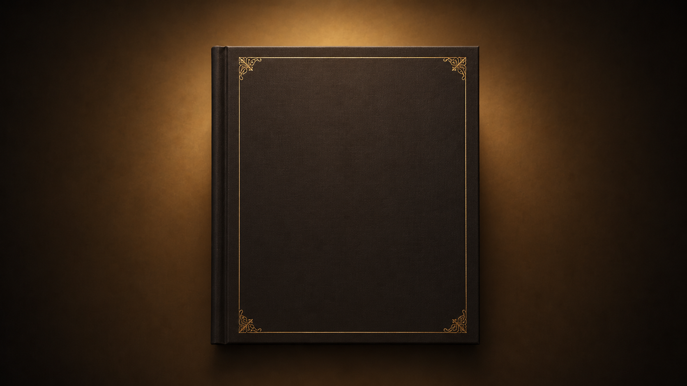
Haflah
Akhirussanah
Tresnueve
SMPIT Nur Hikmah
Scroll untuk membuka album
Chapter 01
MPLS
Masa Pengenalan Lingkungan Sekolah
Di sinilah langkah pertama TRESNUEVE dimulai. Hari-hari penuh
rasa ingin tahu, wajah-wajah baru, dan sapaan yang perlahan
menjadi akrab. Dari gerbang sekolah ini, mereka mulai menulis
cerita pertama di SMPIT Nur Hikmah.
first step, first friends, first memories.
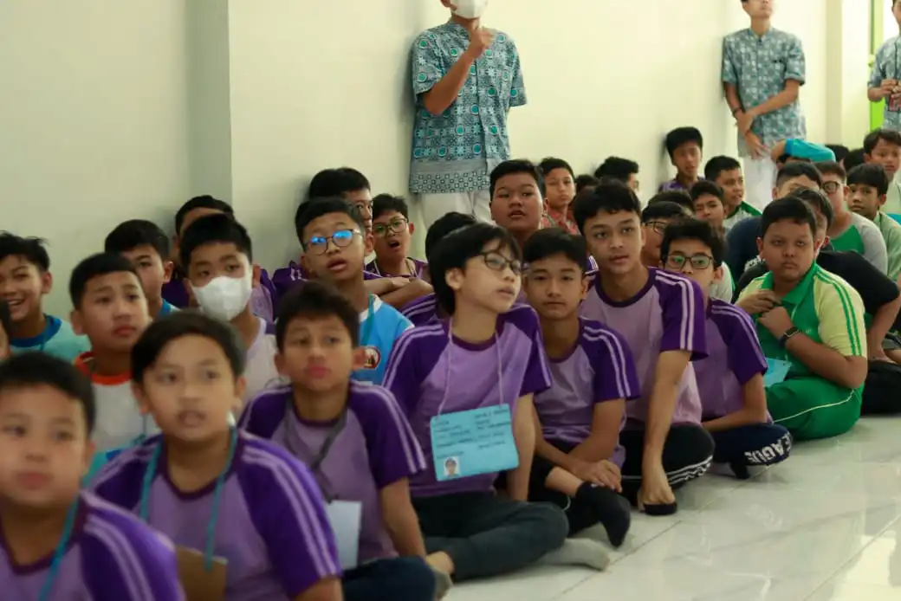
awal cerita TRESNUEVE
MPLS
01 / 17 · Geser kiri untuk cerita berikutnya
Chapter 02
Quran Camp
Menguatkan Hafalan dan Menenangkan Hati
Di Quran Camp, mereka belajar bahwa menghafal bukan hanya
tentang mengingat ayat, tetapi juga tentang menjaga hati. Ada
tilawah, doa, bimbingan, dan kebersamaan yang pelan-pelan
menumbuhkan cinta kepada Al-Qur’an.
quiet hearts, stronger memories.
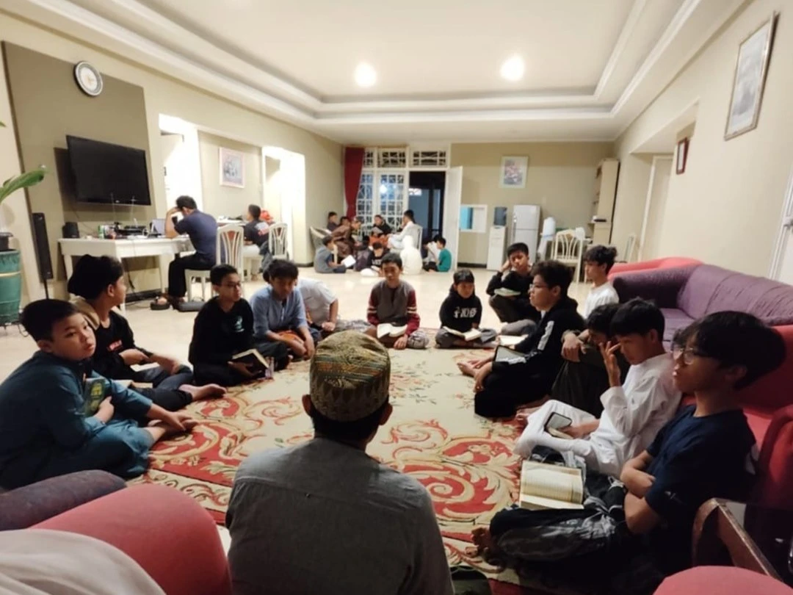
hari-hari bersama Al-Qur’an
Quran Camp
02 / 17 · Geser kiri untuk cerita berikutnya
Chapter 03
Field Trip
Belajar Langsung dari Perjalanan
Perjalanan ke Gedung Sate menjadi pengalaman belajar yang
berbeda. Mereka keluar dari ruang kelas, melihat dunia lebih
dekat, dan menemukan bahwa ilmu juga bisa hadir dari
perjalanan, pengamatan, dan rasa ingin tahu.
learning outside, remembering forever.
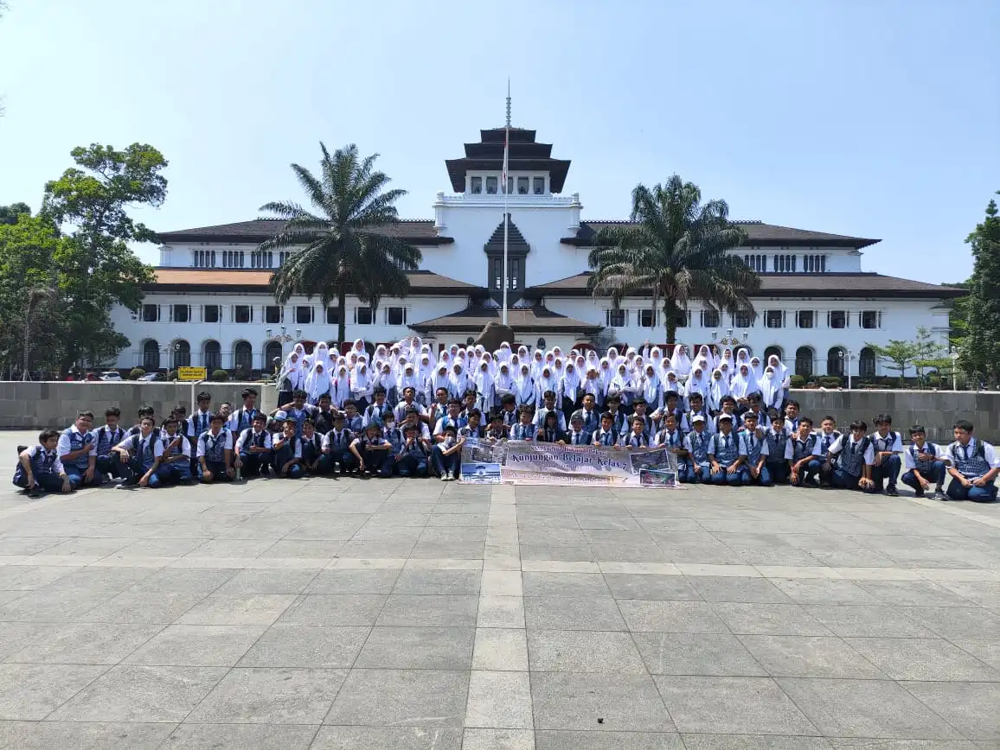
perjalanan yang menjadi cerita
Field Trip
03 / 17 · Geser kiri untuk cerita berikutnya
Chapter 04
LDKS
Belajar Berani dan Bertanggung Jawab
Melalui LDKS, mereka mulai mengenal arti disiplin, keberanian,
dan tanggung jawab. Bukan hanya belajar memimpin, tetapi juga
belajar mendengar, bekerja sama, dan menjaga kepercayaan dalam
kebersamaan.
learning to lead, learning to grow.
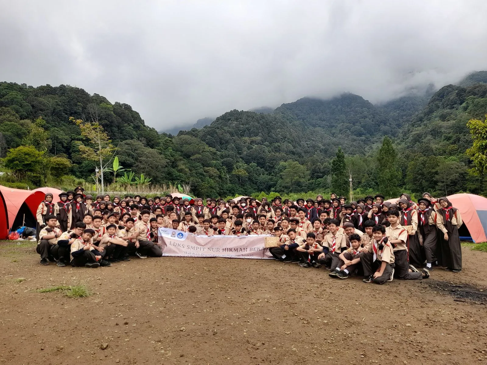
TRESNUEVE belajar memimpin
LDKS
04 / 17 · Geser kiri untuk cerita berikutnya
Chapter 05
Gelar Karya P5
Ruang untuk Ide dan Kreativitas
Dalam Gelar Karya P5, ide-ide kecil mendapat ruang untuk
tumbuh. Mereka belajar menyusun proses, menampilkan hasil, dan
percaya bahwa setiap karya memiliki cerita, usaha, dan
kebanggaannya sendiri.
ideas become stories, works become memories.
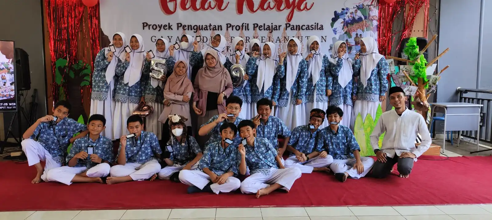
karya kecil, kenangan besar
Gelar Karya P5
05 / 17 · Geser kiri untuk cerita berikutnya
Chapter 06
Munaqosyah
Menjaga Hafalan, Menguatkan Keberanian
Munaqosyah menjadi salah satu momen penting dalam perjalanan
mereka bersama Al-Qur’an. Di balik setiap bacaan, ada latihan,
bimbingan, doa, dan keberanian untuk menunjukkan proses yang
telah dijaga dengan sungguh-sungguh.
courage speaks through every verse.
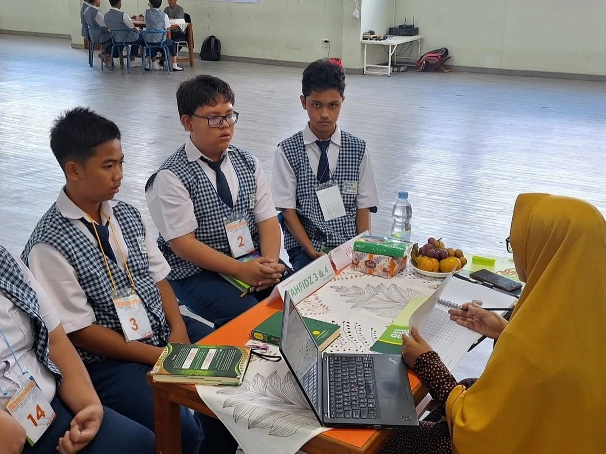
momen berani menjaga amanah
Munaqosyah
06 / 17 · Geser kiri untuk cerita berikutnya
Chapter 07
Khotmul Qur’an
Syukur atas Perjalanan Bersama Al-Qur’an
Khotmul Qur’an menjadi halaman penuh syukur di akhir
perjalanan kelas 7. Bukan hanya tentang capaian, tetapi
tentang proses menjaga ayat demi ayat, belajar sabar, dan
merasakan bahwa setiap langkah bersama Al-Qur’an selalu
membawa keberkahan.
grateful hearts, beautiful verses.
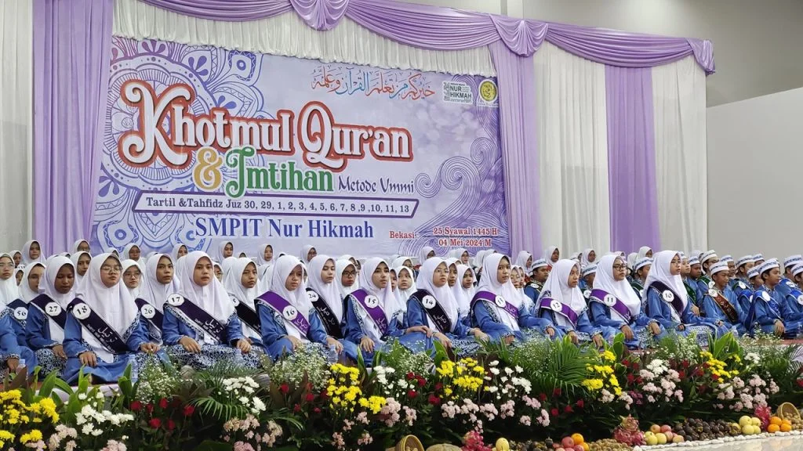
halaman syukur TRESNUEVE
Khotmul Qur’an
07 / 17 · Geser kiri untuk cerita berikutnya
Chapter 08
PEMILOS
Belajar Memilih, Dipilih, dan Menjaga Amanah
PEMILOS menjadi ruang belajar tentang suara, pilihan, dan
kepercayaan. Dari proses ini, mereka mengenal bahwa
kepemimpinan bukan sekadar jabatan, tetapi keberanian untuk
melayani dan menjaga amanah.
voices, choices, and trust.
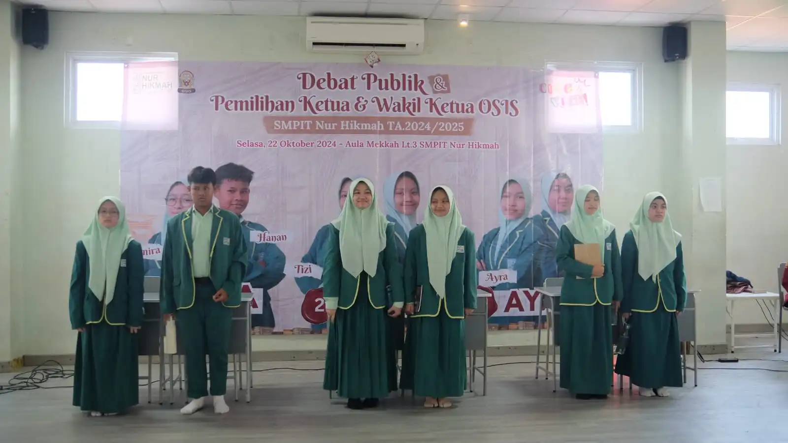
belajar memilih dan dipercaya
PEMILOS
08 / 17 · Geser kiri untuk cerita berikutnya
Chapter 09
PERSALAM
Mandiri, Tangguh, dan Kompak
PERSALAM menghadirkan suasana yang berbeda dari hari-hari
biasa. Di alam terbuka, mereka belajar mandiri, saling
membantu, menjaga kekompakan, dan menemukan bahwa kebersamaan
sering tumbuh dari hal-hal sederhana.
under the sky, together we grow.
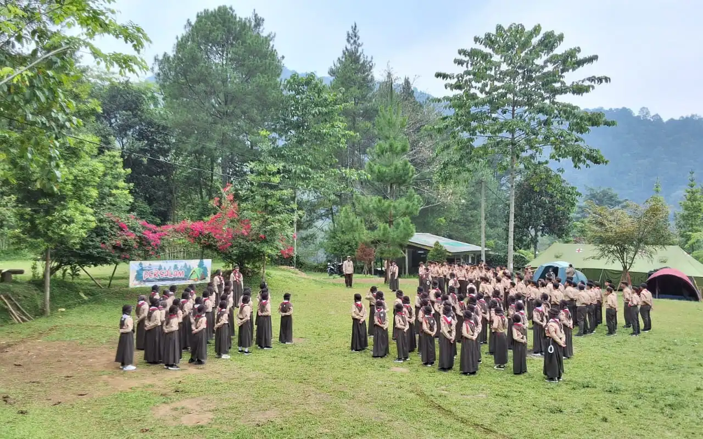
kisah hangat dari alam terbuka
PERSALAM
09 / 17 · Geser kiri untuk cerita berikutnya
Chapter 10
English Camp
Berani Berbicara dan Bereksplorasi
English Camp menjadi ruang untuk belajar bahasa dengan cara
yang lebih hidup. Mereka berlatih berbicara, bekerja sama,
mencoba hal baru, dan membangun percaya diri dalam suasana
yang menyenangkan.
speak up, team up, level up.
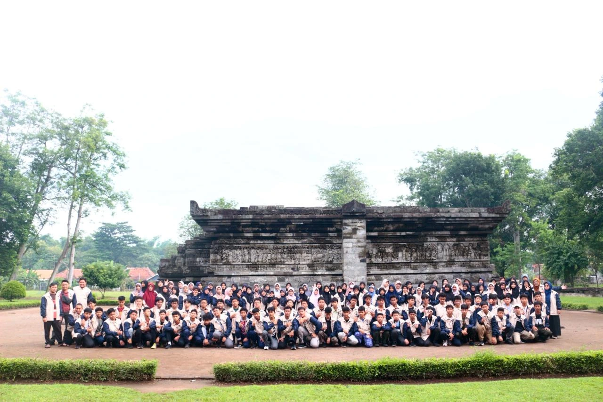
belajar bahasa lewat pengalaman
English Camp
10 / 17 · Geser kiri untuk cerita berikutnya
Chapter 11
RAMADAN
Belajar berbagi menjelang Ramadan
Selalu ada momen yang sederhana namun hangat di Ramadan. Ada
tawa, doa, cerita, dan rasa syukur karena kebersamaan ini
perlahan menjadi bagian dari kenangan yang akan dirindukan.
shared meals, shared prayers, shared memories.
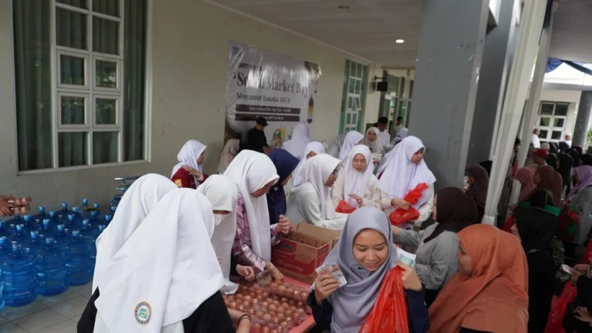
hangatnya Ramadan
someday
11 / 17 · Geser kiri untuk cerita berikutnya
Chapter 12
Jalasah Ruhiyah
Menata Hati Menjelang Akhir Perjalanan
Jalasah Ruhiyah menjadi jeda untuk menenangkan hati. Mereka
berkumpul dalam doa, nasihat, dan kebersamaan, mengingat bahwa
setiap langkah ilmu selalu membutuhkan keberkahan.
a quiet pause before the final steps.
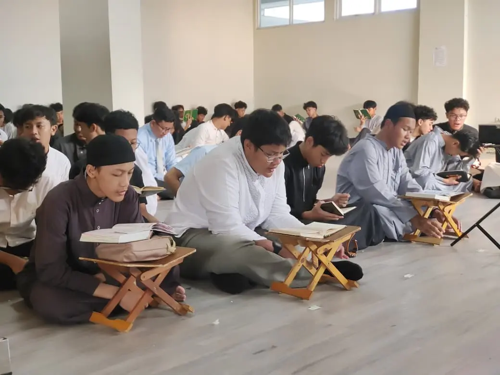
menata hati
Jalasah Ruhiyah
12 / 17 · Geser kiri untuk cerita berikutnya
Chapter 13
TKA
Ikhtiar Menata Kesiapan Akademik
TKA ujian akhir yang penuh perjuangan. Dari TKA mereka tahu,
mereka tidak pernah berjalan sendiri; ada guru yang membimbing
dengan sabar, orang tua yang mendoakan tanpa henti, dan
teman-teman yang hadir untuk saling menguatkan.
focus, faith, and steady effort.
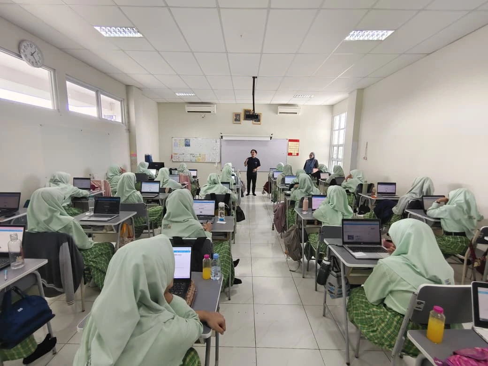
langkah serius menuju akhir jenjang
TKA
13 / 17 · Geser kiri untuk cerita berikutnya
Chapter 14
PSAJ Tulis
Menguji Proses, Menguatkan Langkah
Dalam PSAJ Tulis, mereka menuangkan hasil belajar yang telah
dijalani selama bertahun-tahun. Ada fokus, kesungguhan, dan
keberanian untuk menyelesaikan satu demi satu halaman
perjuangan.
every answer carries a journey.
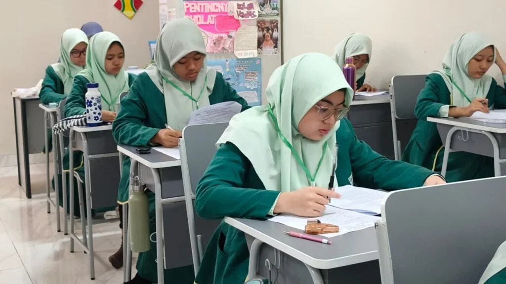
setiap jawaban ada ceritanya
PSAJ Tulis
14 / 17 · Geser kiri untuk cerita berikutnya
Chapter 15
PSAJ Praktik
Menunjukkan Kemampuan dengan Percaya Diri
PSAJ Praktik menjadi ruang untuk memperlihatkan kemampuan
secara nyata. Mereka belajar tampil, menjelaskan,
mempraktikkan, dan percaya bahwa proses panjang telah
membentuk keberanian dalam diri mereka.
practice shows what the heart has learned.
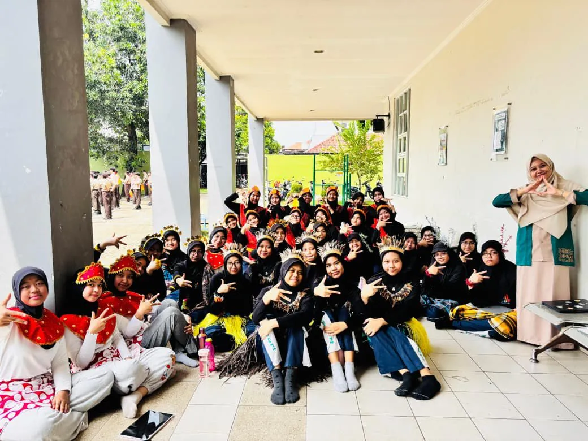
percaya diri menunjukkan proses
PSAJ Praktik
15 / 17 · Geser kiri untuk cerita berikutnya
Chapter 16
MABIT
Malam untuk Menata Hati
MABIT menjadi ruang untuk kembali menenangkan hati. Dalam
suasana malam yang lebih hening, mereka belajar mendekat,
berdoa, menguatkan iman, dan membawa setiap kenangan menuju
akhir perjalanan dengan lebih bermakna.
a quiet night before the final page.
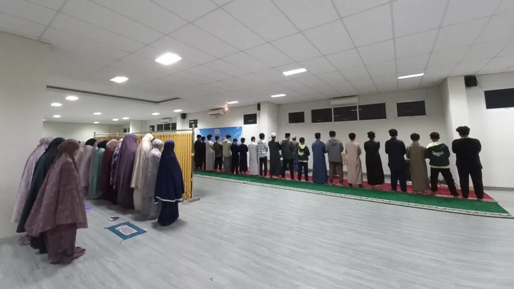
malam yang menguatkan hati
MABIT
16 / 17 · Geser kiri untuk cerita berikutnya
Chapter 17
Kelulusan
Saat Hening yang Menjadi Penanda Akhir Perjuangan
Di ruang yang tenang, mereka duduk bersama membawa doa, harap,
dan seluruh ikhtiar yang telah dilalui. Pengumuman kelulusan
menjadi salah satu momen paling berkesan, saat perjalanan
panjang di sekolah mulai menemukan jawabannya, sebelum mereka
melangkah menuju Akhirussanah.
a quiet moment before the next chapter.
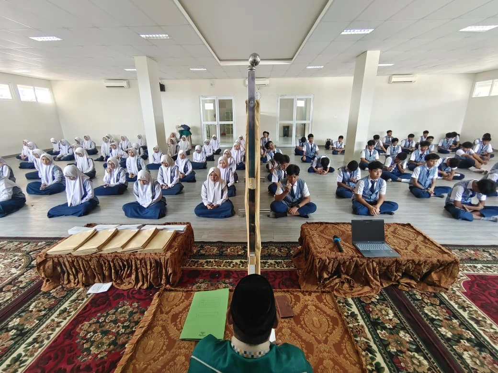
alhamdulillah lulus
lulus
17 / 17 · Scroll untuk menuju Puncak Acara
01 / 17
Geser kiri/kanan untuk membuka cerita
Scroll untuk menuju Puncak Acara
Menuju Puncak Acara
Akhirussanah
Setelah lembar-lembar perjalanan penuh cerita, tibalah saatnya
melangkah menuju hari yang dinanti. Sebuah momen untuk
merayakan kebersamaan, perjuangan, doa, dan langkah baru
Angkatan IX SMPIT Nur Hikmah, TRESNUEVE.
Detail Undangan
Waktu & Tempat
Berikut informasi pelaksanaan acara Akhirussanah Angkatan IX SMPIT Nur
Hikmah.
Rangkaian acara Akhirussanah SMPIT Nur Hikmah Tahun Ajaran 2025/2026.
06.30 – 07.00
Registrasi Tamu
07.00 – 07.05
Pembukaan
07.05 – 07.15
Tilawah Al-Qur’an
07.15 – 07.20
Menyanyikan Lagu Indonesia Raya
07.20 – 07.25
Doa
07.25 – 07.35
Penampilan Tari Saman
07.35 – 07.45
Sambutan Kepala SMPIT Nur Hikmah
07.45 – 07.55
Penampilan Akapela
07.55 – 08.30
Penampilan Drama
08.30 – 09.00
Prosesi Peserta Wisuda Memasuki Ruang Acara
09.00 – 09.05
Menyanyikan Mars Nur Hikmah
09.05 – 09.15
Sambutan Ketua Yayasan Wakaf Nur Hikmah
09.15 – 09.30
Storytelling oleh Perwakilan Siswa
09.30 – 10.20
Prosesi Penyematan Wisudawan dan Wisudawati SMPIT Nur Hikmah
10.20 – 10.30
Sesi Dokumentasi
10.30 – 10.45
Persembahan Wisudawan dan Wisudawati
10.45 – 10.55
Testimoni Perwakilan Orang Tua/Wali Murid
10.55 – 11.15
Pengumuman dan Penyerahan Hadiah Siswa Terbaik
11.15 – 11.20
Doa dan Penutupan
Tulis
Pesan & Doa Terbaik
Tuliskan doa dan harapan terbaik untuk wisudawan dan wisudawati
Angkatan IX SMPIT Nur Hikmah.
Dengan Hormat
Kami Menantikan Kehadiran Ayah/Bunda
Kehadiran dan doa Ayah/Bunda menjadi bagian yang sangat berarti dalam
Haflah Akhirussanah SMPIT Nur Hikmah, sebagai momen syukur atas
perjalanan belajar, pembinaan adab, dan pencapaian siswa-siswi
angkatan IX SMPIT Nur Hikmah.
Semoga ilmu, akhlak, dan nilai-nilai Al-Qur’an yang telah tertanam
menjadi bekal kebaikan bagi para wisudawan dan wisudawati dalam
melanjutkan langkah berikutnya.